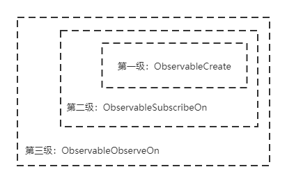

public static <T> Observable<T> create(ObservableOnSubscribe<T> source) { ObjectHelper.requireNonNull(source, "source is null"); return RxJavaPlugins.onAssembly(new ObservableCreate<T>(source)); }
2.ObservableSubscribeOn
1 2 3 4
public final Observable<T> subscribeOn(Scheduler scheduler) { ObjectHelper.requireNonNull(scheduler, "scheduler is null"); return RxJavaPlugins.onAssembly(new ObservableSubscribeOn<T>(this, scheduler)); }
new ObservableSubscribeOn(this, scheduler)，其中this对象是上一级创建的ObservableCreate对象，所以ObservableSubscribeOn对象中嵌套着上一级的ObservableCreate对象
3.ObservableObserveOn
1 2 3 4 5
public final Observable<T> observeOn(Scheduler scheduler, boolean delayError, int bufferSize) { ObjectHelper.requireNonNull(scheduler, "scheduler is null"); ObjectHelper.verifyPositive(bufferSize, "bufferSize"); return RxJavaPlugins.onAssembly(new ObservableObserveOn<T>(this, scheduler, delayError, bufferSize)); }
new ObservableObserveOn(this, scheduler, delayError, bufferSize)，其中this对象是上一级创建的ObservableSubscribeOn，所以ObservableObserveOn对象中嵌套着上一级的ObservableSubscribeOn对象，形成如下图的层级结构：  observable的层级结构
public final voidsubscribe(Observer<? super T> observer) { ObjectHelper.requireNonNull(observer, "observer is null"); try { observer = RxJavaPlugins.onSubscribe(this, observer);
ObjectHelper.requireNonNull(observer, "The RxJavaPlugins.onSubscribe hook returned a null Observer. Please change the handler provided to RxJavaPlugins.setOnObservableSubscribe for invalid null returns. Further reading: https://github.com/ReactiveX/RxJava/wiki/Plugins");
subscribeActual(observer); } catch (NullPointerException e) { // NOPMD throw e; } catch (Throwable e) { Exceptions.throwIfFatal(e); RxJavaPlugins.onError(e); NullPointerException npe = new NullPointerException("Actually not, but can't throw other exceptions due to RS"); npe.initCause(e); throw npe; } }
public Disposable scheduleDirect(@NonNull Runnable run, long delay, @NonNull TimeUnit unit) { final Worker w = createWorker();
final Runnable decoratedRun = RxJavaPlugins.onSchedule(run);
DisposeTask task = new DisposeTask(decoratedRun, w);
w.schedule(task, delay, unit);
return task; }
createWorker返回EventLoopWorker对象
1 2 3
public Worker createWorker() { returnnew EventLoopWorker(pool.get()); }
再看一下EventLoopWorker
1 2 3 4 5 6 7 8 9 10 11 12
static final classEventLoopWorkerextendsScheduler.Worker{ private final CompositeDisposable tasks; private final CachedWorkerPool pool; private final ThreadWorker threadWorker;
static final classCachedWorkerPoolimplementsRunnable{ private final long keepAliveTime; private final ConcurrentLinkedQueue<ThreadWorker> expiringWorkerQueue; final CompositeDisposable allWorkers; private final ScheduledExecutorService evictorService; private final Future<?> evictorTask; private final ThreadFactory threadFactory;
public voidonNext(T t) { if (t == null) { onError(new NullPointerException("onNext called with null. Null values are generally not allowed in 2.x operators and sources.")); return; } if (!isDisposed()) { observer.onNext(t); } }
// Re-check disposed state for removing in case we were racing a call to dispose(). if (disposed) { handler.removeCallbacks(scheduled); return Disposables.disposed(); }